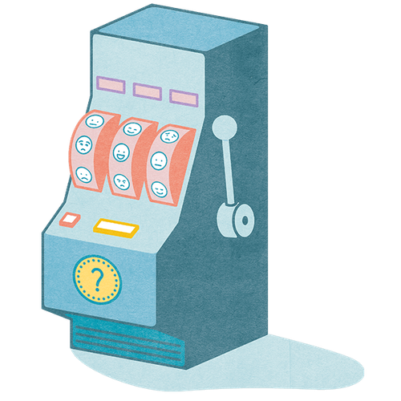

Mit der Academy erhaltet ihr im Business-Plan praxisnahe Lernmodule rund um Facilitation und wirksame Transformation.
Gemeinsam mit 9 Spaces zeigt Plan International Deutschland, wie wertebasiertes Arbeiten Orientierung gibt – nach innen wie nach außen.

Mehrdeutige, komplexe und ungewisse Situationen gehören zum Leben dazu. Dieses Tool hilft dir dabei, deine Reaktionen zu reflektieren, um einen selbstbestimmteren Umgang mit ihnen zu finden.
Um gut mit anderen arbeiten zu können, ist es wichtig, sich immer besser selbst kennenzulernen.
Ein Tool, das dir dabei hilft, deine Beziehungen einzuordnen und zu erkennen, ob es Handlungsbedarf gibt.
Finde deinen persönlichen Purpose in einer gut investierten Stunde.